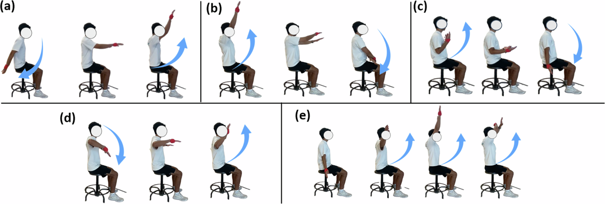
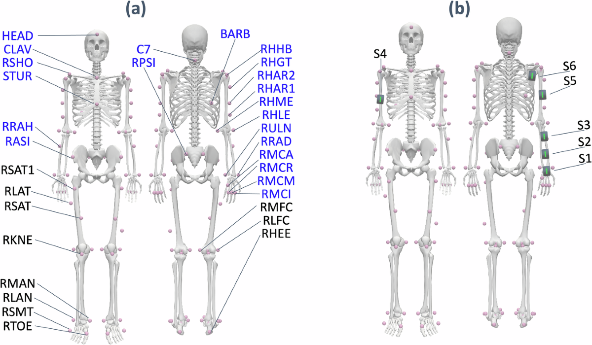
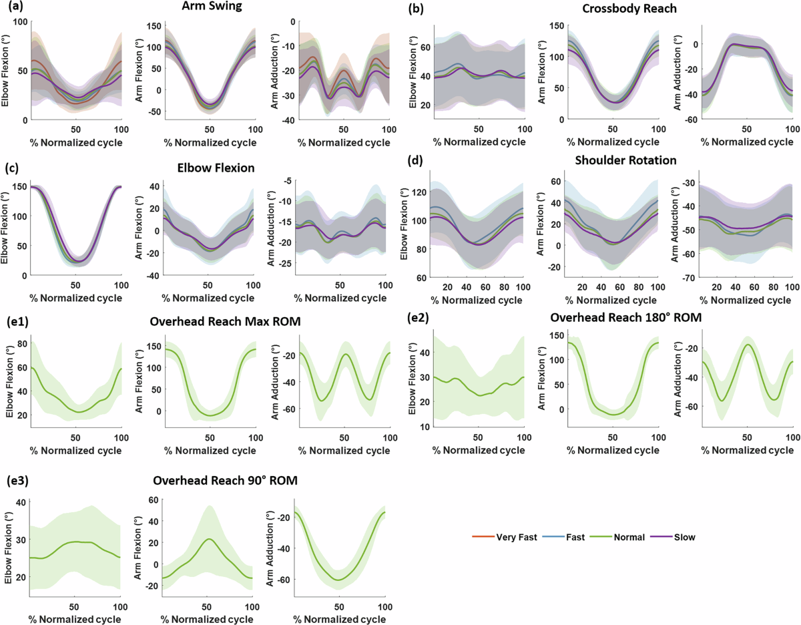
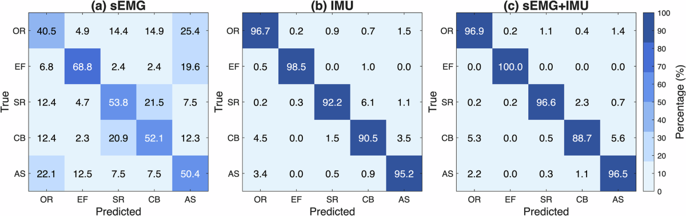
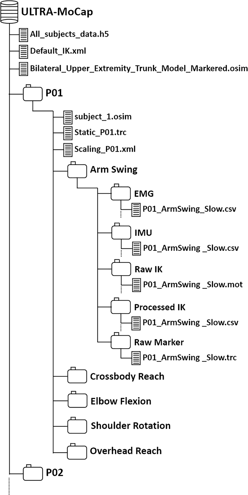

Subject Distributions

Human upper limb movement prediction from multi-modal wearable sensors has applications in rehabilitation, sports analysis, assistive device control, and human-computer interaction, offering less intrusive alternatives to camera-based motion capture (MoCap) systems. Yet, current datasets often lack comprehensive multi-modal data integrating inertial measurement unit (IMU) and surface electromyography (sEMG) sensors and have limited coverage of upper limb kinematics with insufficient fidelity to capture isolated single-joint elbow motions and coordinated multi-joint shoulder movements. To address these gaps, we introduce the Upper Limb Tracking with Multi-modal Capture (ULTRA-MoCap) dataset, which integrates multi-modal sensing with IMU, sEMG, and high-fidelity upper limb kinematics modeling from a multi-degree-of-freedom musculoskeletal model. Data from IMUs on the hand, wrist, and forearm, along with combined sEMG/IMU sensors on the biceps brachii, triceps brachii, and deltoid, were collected from thirteen subjects performing five upper limb movements at different speeds. This paper describes the data collection, sensor configuration, and processing pipeline and highlights ULTRA-MoCap's potential to support a wide range of research across biomechanics, wearable sensing, and motion analysis.




| Sensor | Placement | Data Type |
|---|---|---|
| S1 | Hand | IMU |
| S2 | Wrist | IMU |
| S3 | Forearm | IMU |
| S4 | Bicep | EMG/IMU |
| S5 | Tricep | EMG/IMU |
| S6 | Deltoid | EMG/IMU |

Figure 3. Per subject, each movement provides synchronized sEMG, IMU, raw and
processed inverse-kinematics, and raw marker files, alongside the OpenSim model and a combined
All_subjects_data.h5.
@article{fritsche2026ultramocap,
title = {ULTRA-MoCap: A Multimodal IMU and sEMG Dataset for Upper Body Joint Kinematics Analysis},
author = {Fritsche, Oliver and Camacho, Steven and Hossain, Md Sanzid Bin and Halfpenny, Tyler
and Arciniegas, Carlos and Dranetz, Joseph and Hadley, Dexter and Guo, Zhishan and Choi, Hwan},
journal = {Scientific Data},
volume = {13},
pages = {622},
year = {2026},
doi = {10.1038/s41597-026-06687-5}
}